I used the given values for Dx and Dy to calculate the respective partial derivatives in x and y by convolving with the given cameraman image. Then I combined the derivatives by computing their magnitude to form the gradient magnitude image.
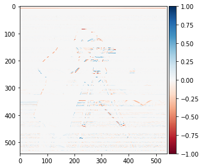
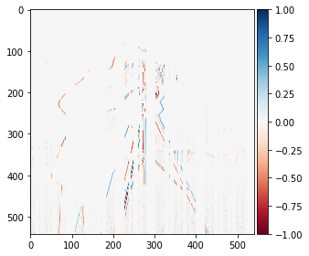
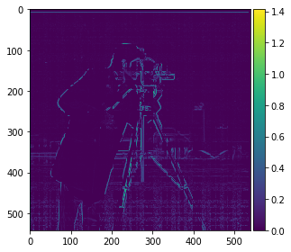
Using a size of 31 and sigma of 5, I made a Gaussian filter to blur the image and then repeated the procedure from 1.1. Since blurring the image smoothens out the image, the result is a lot smoother and cleaner than previously but due to the blurring, the outline is much thicker than in the previous result.
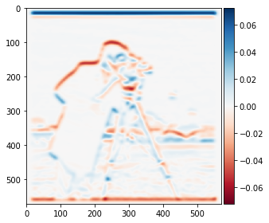
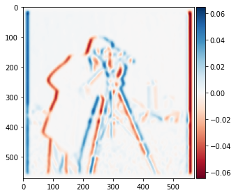


The 1st image I used was the facade image.

The best rotation angle was determined to be -4 degrees.


2nd image I used is of a cat slanting on a sofa (Failure Case). `

The best rotation angle was determined to be 8 degrees.
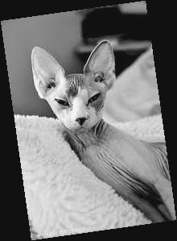

This image didn't work very well since the algorithm thinks the cat should be slanted further in the wrong direction. This may be due to the cropped nature of the image, where the cat takes up most of the photo. This would make it difficult for the algorithm to detect where the edges are.
3rd image I used is of Leaning Tower of Pisa `

The best rotation angle was determined to be 5 degrees.

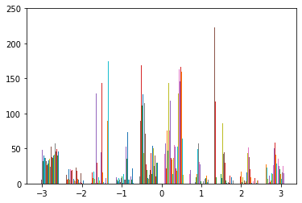
4th image I used is of a tilted building on a street `
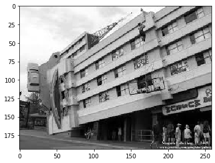
The best rotation angle was determined to be -5 degrees.

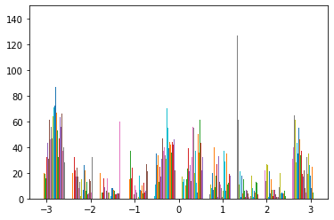
1st image I used was the Taj Mahal image given as an example.

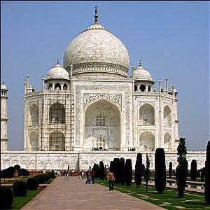
In the above image, the black inscriptions in the center, as well as the renovation structure on the left, are significantly sharper.
2nd image I used was of an image of a black swan I took in Spain.

Since the image is already pretty high quality, the sharpening isn't very evident. However, the curve around its neck as well as its beak have been somewhat sharpened further due to this algorithm.
Using this sharpened image, I blurred it and sharpened it again to compare it with the original sharpened image.
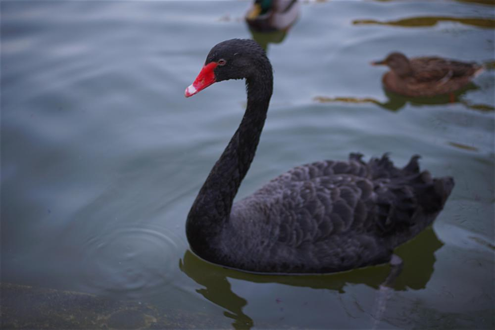
Here, the head of the swan is blurrier in the final image than the initial sharp image. Since the sharpening effect doesn't actually add new information to the image, but rather accentuates existing features, blurring and then sharpening it serves to reduce the sharpening effect.
I started by using the sample images of Derek and his cat, Nutmeg


I aligned both of the images based on nutmeg and then created the hybrid image using low-pass with cutoff=4 for Derek and high-pass with cutoff=7
for nutmeg.

I also calculated the log magnitudes of the Fourier transform of these images:

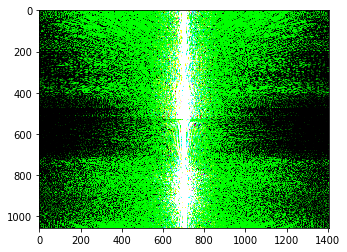


Next, I tried to make a hybrid from 2 pictures of myself, 1 when I was happy and 1 when I was sad

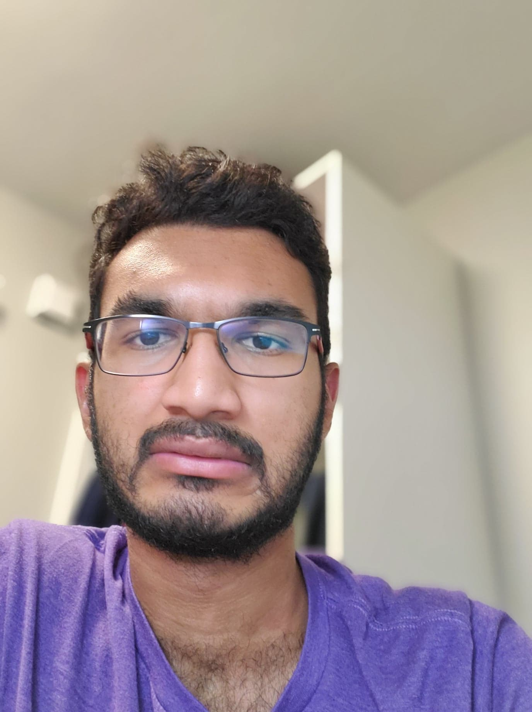
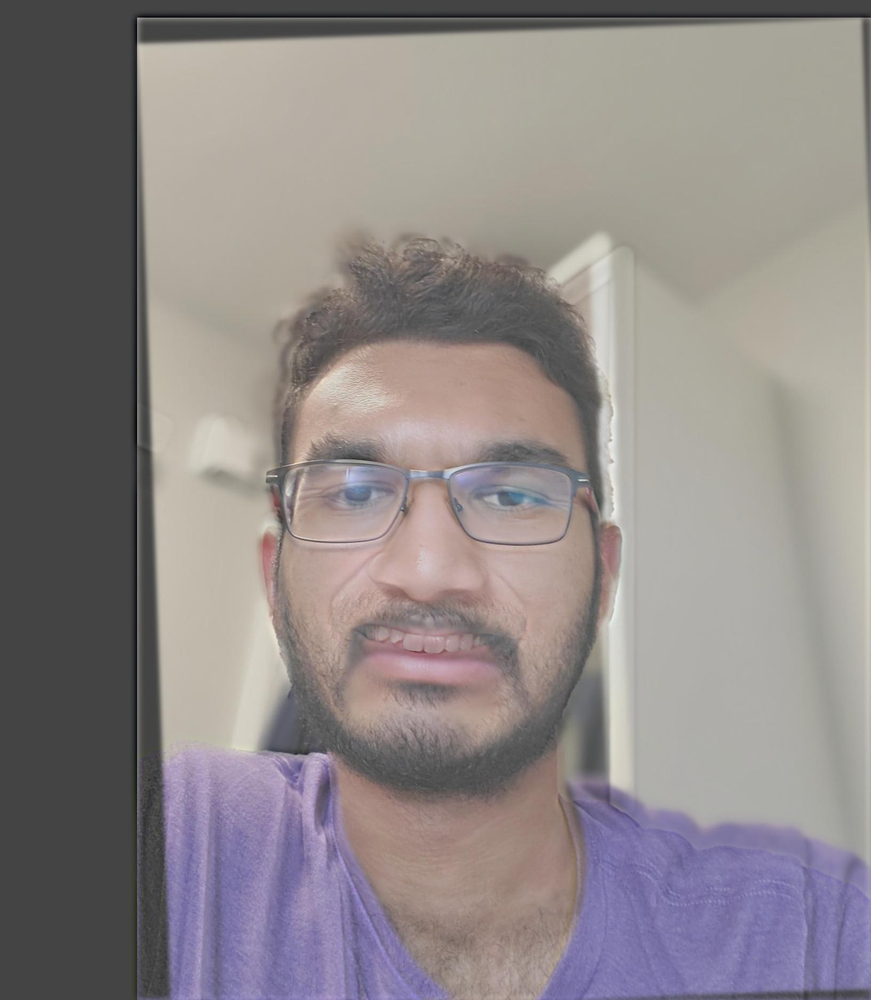
This hybrid did not work very well because there was only a small but significant difference between the images, my teeth, due to which the algorithm was unable to merge my teeth into the hybrid image without the output looking weird.
Next, I tried to make a hybrid between a young man and an old man.


I used color in all of my hybrid images above. In general, I noticed that color works better in the low-pass filters (like in Derek) because it seems to retain that color better than in the high-pass images.
1st image I used was the Lincoln image given as an example
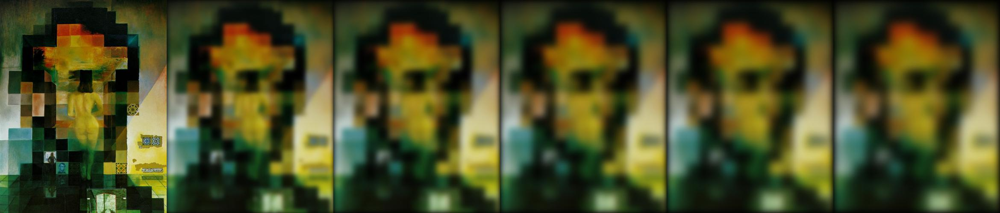

Next, I checked the Gaussian and Laplacian stacks for the hybrid image of myself.

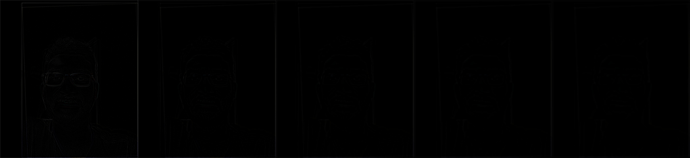
The laplacian stack here is very dim with only my glasses somewhat visible. This may be because the image is a closeup, due to which there are not a lot of edges that would show up.
First, I started by making the oraple image by blending the apple and orange.


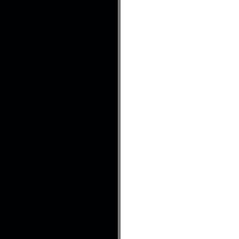

Next, I blended a picture of the moon at night with a beach during the day.


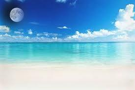
Lastly, I blended a picture of the sun during the day with an image of water at night
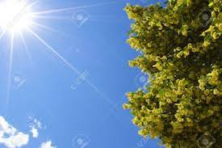
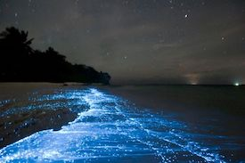

I also applied the Laplacian stack to these images
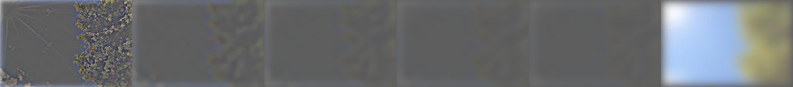
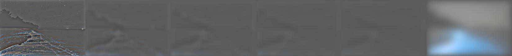

I used color in all the images above to enhance the effect. In general, the color made the blended images look a lot cleaner and believable whereas grayscale images were harder to distinguish and understand.
The coolest thing I learned was that blending requires using a mask to tell the algorithm which parts of each image you want to keep. This mask could be used to make some really cool images so I hope to have fun with this when I have more time, perhaps during winter break.